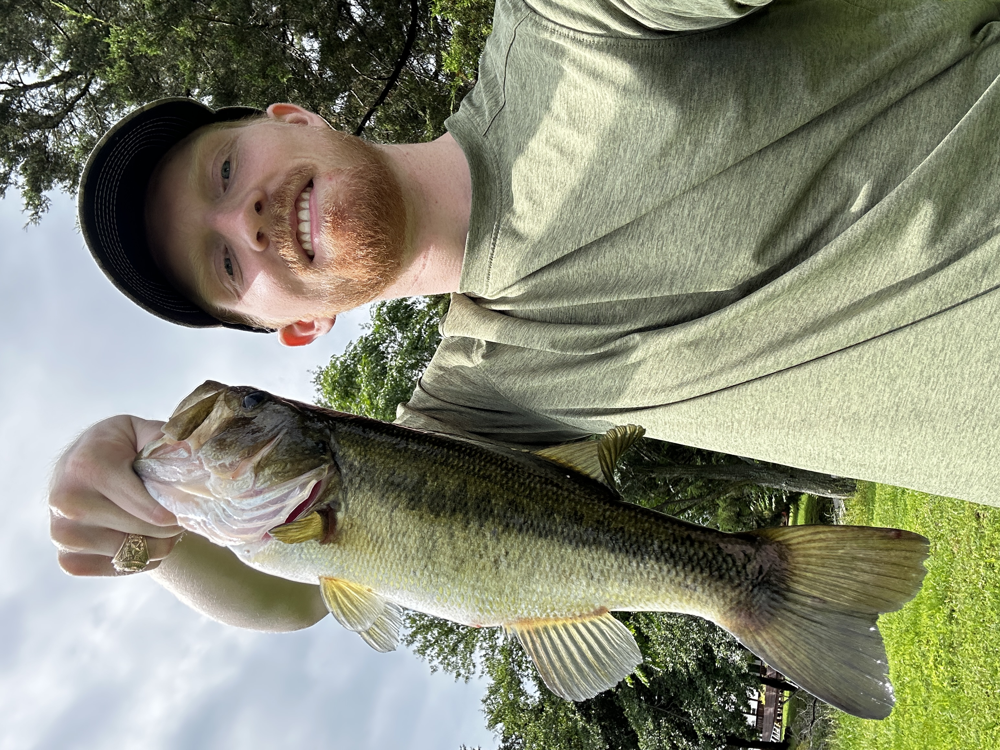

Jacob Morrow

Summary
Highly motivated Engineer with over two years of dynamic experience in medical device manufacturing (neuromodulation).
Communicative, adaptable, thorough, dependable, and always looking for learning opportunities. Well versed in cross-functional
collaboration to improve the quality of processes and product with the customer in mind always.
Education
Bachelor of Science - Manufacturing and Mechanical Engineering Technology
Texas A&M University - College Station, TX
Graduated 05/2021
Skills
- Process Development and Validation
- Design of Experiments
- FMEA
- Lean Manufacturing and Continuous Improvement
- Root Cause Analysis
- Minitab Statistical Software
- Design for Manufacturing (Additive, Subtractive
- Solidworks / Fusion 360
- FDA 21 CFR 820
- Audit Experience
Experience
Manufacturing Engineer II
LivaNova Inc.
Houston, TX
07/2021 - Current
- Implements process improvements to improve process efficiency, manufacturing techniques, and
yields
- Utilizes lean manufacturing principles to identify and remove wastes from the value stream
- Develops and validates new processes and equipment
- Identifies corrective actions to improve quality through detailed root cause investigation
- Works cross-functionally with Equipment Operations, R&D, Quality, and Regulatory to implement
impactful change
Project Coordinator
NASA/T-Star Capstone Project
College Station, TX
09/2020 - 05/2021
- Worked within a team to develop a weather balloon deployable mechanical subassembly to collect cosmic dust from the stratosphere
- Tasked with coordinating communication between team members, sponsors, customer, and electronic control module teams
- Compiled BOM's, drafted engineering drawings, designed and revised solid models for manufacturing, prototyped assemblies
- Effectively collaborated with sponsors to define functional requirements and develop technical specifications
- Heavy use of Solidworks and Fusion 360 software
Accomplishments
- Promoted to Manufacturing Engineer II after successful extensive CAPA resulting from a non-conformance event. Defended
CAPA in front rooms of internal, FDA, and DEKRA audits with no observations
- Identified and removed process wastes using lean principles resulting in significant savings and increased capacity
- Designed and implemented multiple fixtures and tools to minimize defects and improve process efficiency and operator
ergonomics
- Validated multiple processes
- Supported direct-report intern throughout Summer '23, delivering an impactful and mutually benefitting experience
Hobbies
Contact Me